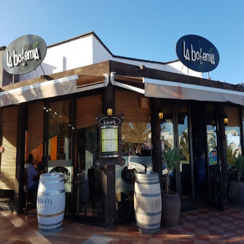
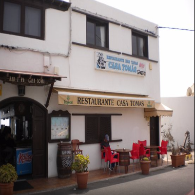
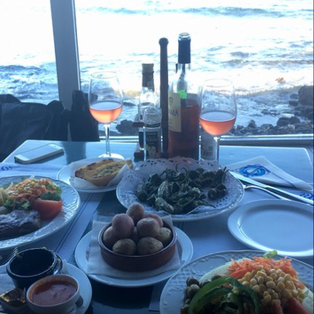
 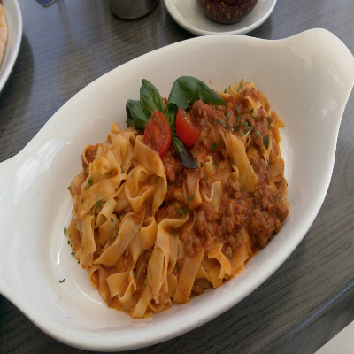
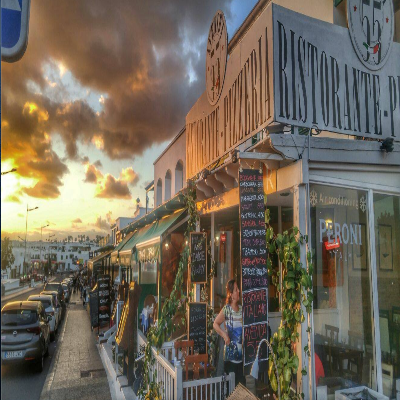
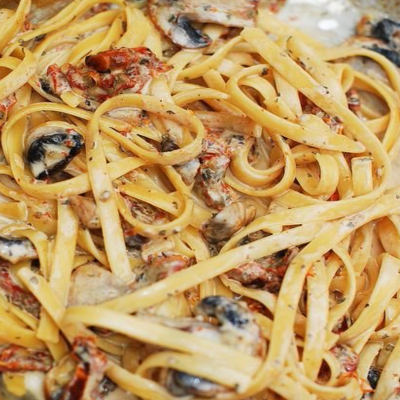
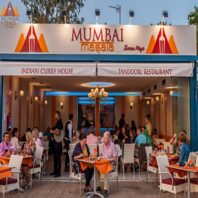
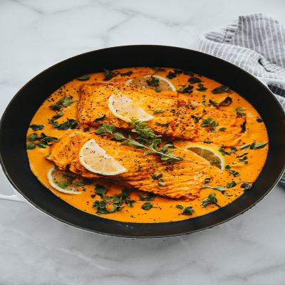
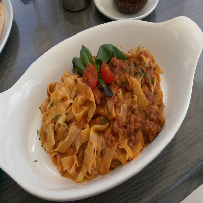
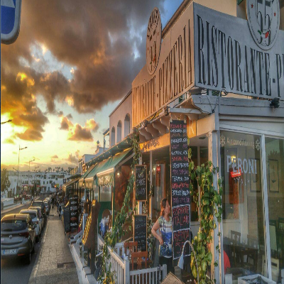
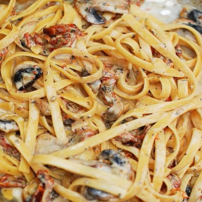
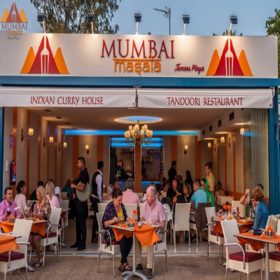
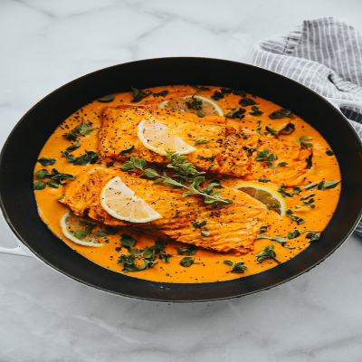
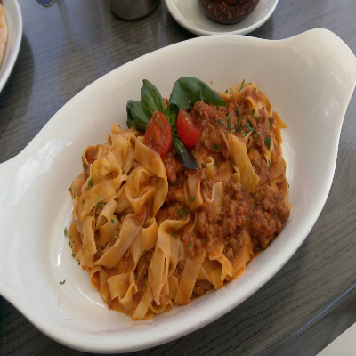
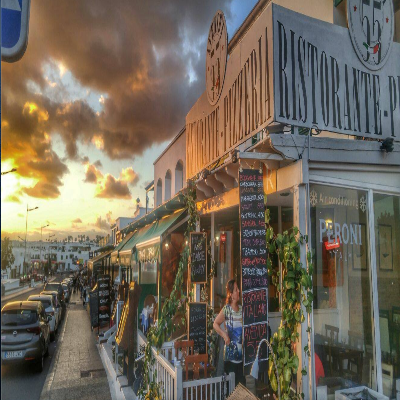
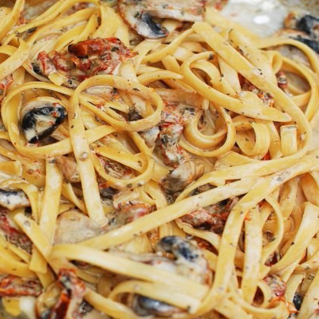
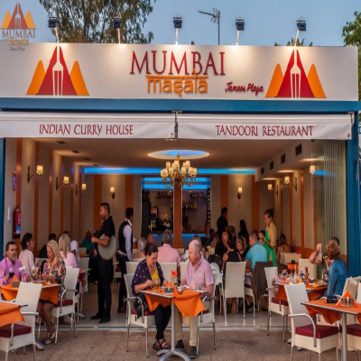
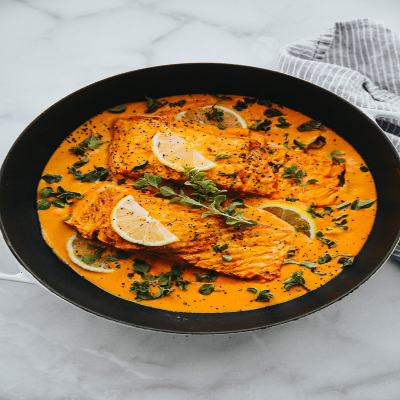
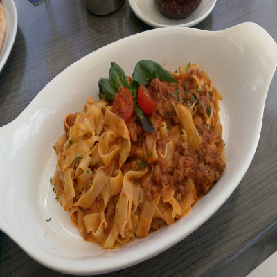
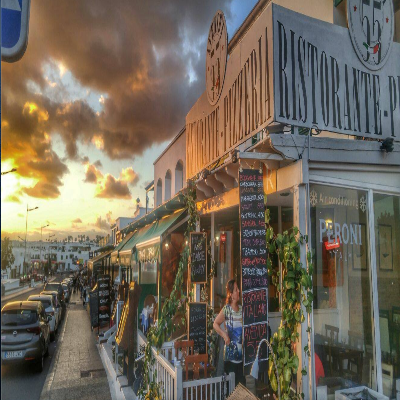
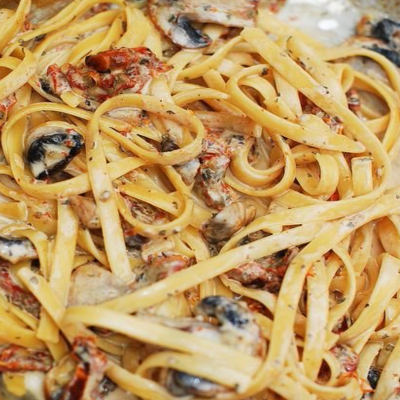
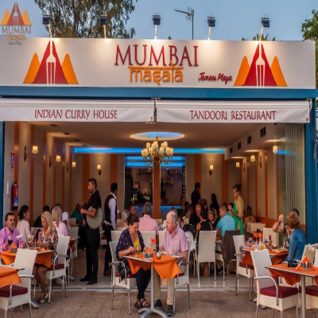
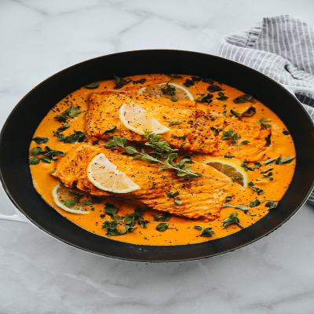
Food and drink is an essential part of the culture in Lanzarote and it could be said that it is also an essential part of a trip; by tasting the typical food of a place we learn new ways of understanding life, new experiences and sensations. If you plan to travel to the island of fire, you will be interested in knowing in advance those typical dishes of the Canary Islands that can be found in the menus of the multitude of local restaurants and that have crossed borders because they are incredibly delicious. Lanzarote cuisine is a reflection of its nature and of the life of its people; natural, with flavour to home and traditional. Experiencing the traditional meals such as Canarian potatoes and the wonderful seafood options is a must when visiting.